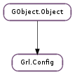

| static | new(plugin, source) |
| get_api_key() | |
| get_api_key_blob(size) | |
| get_api_secret() | |
| get_api_token() | |
| get_api_token_secret() | |
| get_binary(param, size) | |
| get_boolean(param) | |
| get_float(param) | |
| get_int(param) | |
| get_password() | |
| get_plugin() | |
| get_source() | |
| get_string(param) | |
| get_username() | |
| has_param(param) | |
| set(param, value) | |
| set_api_key(key) | |
| set_api_key_blob(blob, size) | |
| set_api_secret(secret) | |
| set_api_token(token) | |
| set_api_token_secret(secret) | |
| set_binary(param, blob, size) | |
| set_boolean(param, value) | |
| set_float(param, value) | |
| set_int(param, value) | |
| set_password(password) | |
| set_plugin(plugin) | |
| set_source(source) | |
| set_string(param, value) | |
| set_username(username) |
None
None
| Name | Type | Access |
|---|---|---|
| parent | GObject.Object | r |
Bases: GObject.Object
| Parameters: | |
|---|---|
| Returns: | a newly-allocated data config. The data config associated with the plugin should not be freed until the plugin has been unloaded. |
| Return type: |
Creates a new data config object that will be associated with a plugin (if source is None ), or a specific source spawned from a plugin (if source is not None ). The latter may be useful for plugins spawning various sources, each one needing a different configuration.
| Parameters: | size (int) – pointer to size of data |
|---|---|
| Returns: | the binary API key, size will reflect the size of the buffer |
| Return type: | int |
| Parameters: | |
|---|---|
| Returns: | param value |
| Return type: |
Gets the value of param encoded as base64. If size is not None, it puts there the size of the value.
| Parameters: | param (str) – a boolean type parameter |
|---|---|
| Returns: | param value |
| Return type: | bool |
| Parameters: | param (str) – a float type parameter |
|---|---|
| Returns: | param value |
| Return type: | float |
| Parameters: | param (str) – an integer type parameter |
|---|---|
| Returns: | param value |
| Return type: | int |
| Parameters: | param (str) – a string type paramter |
|---|---|
| Returns: | param value |
| Return type: | str |
| Parameters: | param (str) – the param |
|---|---|
| Returns: | True if params has a defined value within config, False otherwise. |
| Return type: | bool |
| Parameters: |
|
|---|
Set param value.
| Parameters: | key (str) – the API key |
|---|
Set the webservice API key in the configuration
| Parameters: |
|---|
Set the binary API key in the configuration
| Parameters: | secret (str) – the webservice passphrase |
|---|
Set the webservice passphrase in the configuration
| Parameters: | token (str) – the API token |
|---|
Set the webservice API token in the configuration
| Parameters: | secret (str) – the API token |
|---|
Set the webservice API token secret in the configuration (Needed by OAuth)
| Parameters: |
|---|
Set param value.
| Parameters: |
|---|
Set param value.
| Parameters: |
|
|---|
Set param value.
| Parameters: |
|---|
Set param value.
| Parameters: | password (str) – the password |
|---|
Set the password in the configuration
| Parameters: |
|---|
Set param value.